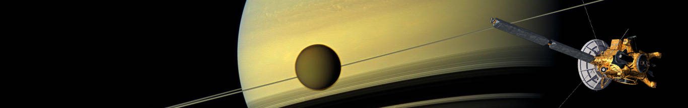

1 / 3

Earth Raise
2 / 3

Enceladus Icy World
3 / 3

The Great Ring
The Cassini mission to Saturn is one of the most ambitious efforts in planetary space exploration ever mounted. A joint endeavor of NASA, the European Space Agency (ESA) and the Italian space agency, Agenzia Spaziale Italiana (ASI), Cassini is a sophisticated robotic spacecraft orbiting the ringed planet and studying the Saturnian system in detail. Cassini also carried a probe called Huygens, which parachuted to the surface of Saturn’s largest moon, Titan, in January 2005 and returned spectacular results
Cassini completed its initial four-year mission to explore the Saturn System in June 2008, and the first extension, called the Cassini Equinox Mission, in September 2010. Now, the healthy spacecraft is making exciting new discoveries in a second extension called the Cassini Solstice Mission.
In late 2016, the Cassini spacecraft will begin a daring set of orbits called the Grand Finale, which will be in some ways like a whole new mission. The spacecraft will repeatedly climb high above Saturn’s poles, flying just outside its narrow F ring 20 times. After a last targeted Titan flyby, the spacecraft will then dive between Saturn’s uppermost atmosphere and its innermost ring 22 times. As Cassini plunges past Saturn, the spacecraft will collect rich and valuable information far beyond the mission’s original plan, including measuring Saturn’s gravitational and magnetic fields, determining ring mass, sampling the atmosphere and ionosphere, and making the last views of Enceladus.